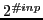
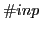

Each Boolean function is represented by a three line section of the
input file. All function sections are separated by the character
'#'. A '#' also separates the header from the first
function section. The format of a function section is the
following:
<number>
<var> ... <var> -1
[ <truth_table> | <function_identifier> <polarity_list> ]
The first line of each function section is a number which is the
identity of the function, or function number. Typically, function
numbers are assigned in the order the functions appear in the file,
beginning with 1. The second line of a function section is a blank
separated list of variables, terminated with -1. The third line may
be either a truth table or a function identifier and polarity list.
One of two possible formats for the third line is a truth table. A
truth table is a string of 0's and 1's, the number of
which must be  where  is the number of variables
on the second line of the function section. Each 0-1 character
represents the function's value given a particular assignment of
inputs values: the  th 0-1 character in the truth table string
(counting from the left starting with 0) is the function value given
an input assignment matching the bits of the binary representation for
th 0-1 character in the truth table string
(counting from the left starting with 0) is the function value given
an input assignment matching the bits of the binary representation for
 where the least significant bit corresponds to the value
assigned to the leftmost variable of the second line and a bit
value of 0 (1) represents an assignment of F (T). An example of a function section with a truth table is the
following:
where the least significant bit corresponds to the value
assigned to the leftmost variable of the second line and a bit
value of 0 (1) represents an assignment of F (T). An example of a function section with a truth table is the
following:
2
8 9 2 4 -1
1001011011110000
This function has a value F if, for example, variable 8 has
value T and variables 2,9, and 4 have value F. This
function has value T if, for example, variables 2 and 8 have
value T and variables 4 and 9 have value F.
Another possible format for the third line of a function section is
the specification of a function identifier and polarity list. The
intention of this format is to allow compact specification of commonly
used functions (especially in circuit problems) with quite a few
arguments that would otherwise require extremely large truth tables.
Function identifiers accepted are: and=, or=, and plainor. The identifier plainor correspond to the ``or''
function described in Section 2.2. Identifiers with
= equate a single variable on the left of the = with a
simple expression on the right of the type indicated by the
identifier. For example, and= corresponds to a function of the
form:
<var> = and(<var>, ... <var>)
This function has value T if and only if the value of the
variable on the left of = is the same as the logical ``and'' of
the variables on the right of =. For identifiers with =,
the polarity list is a string of characters from the set
 with exactly one 3. The number of
characters is the number of variables identified on the second line of
the function section and each character corresponds to an input
variable: the leftmost character corresponding to the leftmost input
variable. The '3' identifies the input variable that is on the
left side of =. The remaining 0's and 1's determine
the polarity of the variables on the right side of =. An
example of a function section with function identifier containing = is the following:
with exactly one 3. The number of
characters is the number of variables identified on the second line of
the function section and each character corresponds to an input
variable: the leftmost character corresponding to the leftmost input
variable. The '3' identifies the input variable that is on the
left side of =. The remaining 0's and 1's determine
the polarity of the variables on the right side of =. An
example of a function section with function identifier containing = is the following:
41
4 11 12 186 187 188 189 193 382 -1
and= 011000031
This would be identical to the following:
193 = and(-4, 11, 12, -186, -187, -188, -189, 382)
If this function were to have a truth table instead of and=, the
truth table would have 512 characters. A similar description applies
to the polarity list of function identifiers with = except that
no '3' exists in such lists. Figure 19
shows an example of a SMURF formatted file: for the problem depicted
the assignment of T to variable 2 and F to all other
variables is a solution.